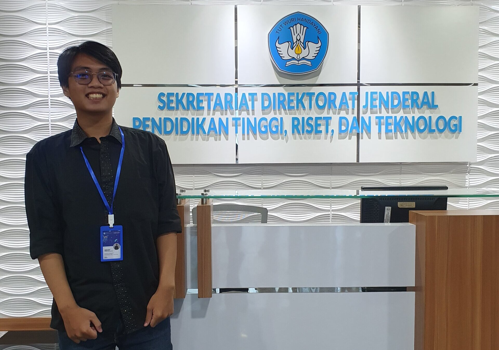

Sapta kecil gemar main komputer. Awalnya dia penasaran, "kok
bisa program berjalan kayak gini?' Akhirnya ketertarikannya
tumbuh hingga kuliah di Teknik Informatika, Universitas
Gunadarma.
Saat mencari program belajar yang bisa praktik dan konversi
SKS, Sapta menemukan program intensif Dicoding via Kampus
Merdeka. Pilihannya semakin mantap setelah melihat adanya
capstone project yang bisa menjadi portofolio.
Pengalaman belajarnya di program intensif Dicoding
menyenangkan. Namun, dia harus mengikuti deadline dengan
disiplin. Tantangan dalam mengelola waktu akhirnya melatih
dia untuk tak menunda pekerjaan, persis keadaan di industri
nyata!
Lulus dari program intensif Dicoding, Sapta kini jadi Junior
TechOps di Nodeflux berkat kedisiplinan, logika berpikir
rapi, dan soft skill dari Dicoding yang jadi kunci utama
kesiapannya di dunia kerja.
Fadilla Rahim
Analyst Data Engineer - ASKRINDO
Lahir dari keluarga sederhana, di Batusangkar, Sumatra
Barat, Fadil nekat masuk jurusan IT demi prospek kerja
menjanjikan. Meski tanpa passion, tekadnya tak surut demi
menyejahterakan keluarga dan mewujudkan mimpi
Masa kuliah tanpa passion itu berubah saat Fadil mengikuti
program intensif Dicoding. Dari awalnya sekadar FOMO, modul
belajar yang ramah pemula dan roadmap karier justru
membantunya menemukan arah passion sejatinya di dunia IT!
Prosesnya tak mudah. Menjalani perkuliahan sambil
mengerjakan capstone project dalam program intensif Dicoding
membuatnya nyaris burnout. Namun, tekanan inilah yang
melatih mentalnya dan menghasilkan portofolio kuat untuk
menutup gap dengan dunia industri.
Kini, kerja kerasnya terbayar lunas! Berbekal ilmu dan
portofolio dari program intensif Dicoding, Fadil berhasil
membanggakan keluarga dengan berkarier sebagai Analyst Data
Engineer di BUMN, ASKRINDO.
Zidane Ikkoy Ramadhan
Staf Sistem SDM (Analis IT Divisi SDM) - Dahana

Waktu SD, laptop pertama Zidane dipakai untuk ikut tren
deface web. Memang cuma sebatas copy-paste script karena ini
tindakan berbahaya, tapi dari situ ia sadar: dunia teknologi
luas dan menarik untuk dipelajari.
Saat berkuliah di Teknik Informatika, Perbanas Institute
Jakarta, Zidane diwajibkan ikut SIB. Pilihannya pun jatuh
pada program intensif Dicoding karena sebelumnya dia pernah
mengikuti program lain dari Dicoding dan punya kesan yang
baik.
Skill dan portofolio Zidane dari program intensif Dicoding
akhirnya membawa dia Iolos magang di Dahana hingga diangkat
jadi pegawai. Kini, dia menjadi analis IT yang mengelola
Human Resource Information System (HRIS), yakni
menerjemahkan kebutuhan HR ke dalam sebuah sistem.